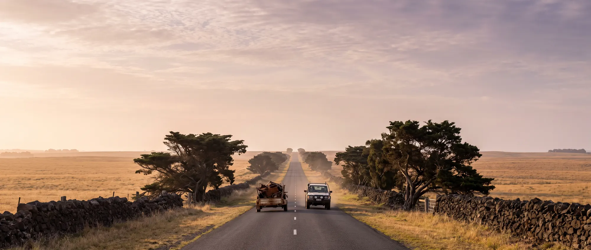

Savings calculator
What Melbourne costs you.
Pick your town, your vehicle and how often you do a scrap run. We'll add up the fuel and the hours you get back by coming to Moorabool instead of Laverton North.
Change the diesel price to what you pay. Litres per 100 km is set by vehicle. Your rate is what an hour off the tools or out of the paddock is worth.
You keep
| Less driving per round trip | 92 km |
|---|---|
| Time back per round trip | 56 min |
| Fuel saved | 11.0 L |
| Your time saved | $56 |
| Total per round trip | $85 |
Road distances and drive times from OpenStreetMap routing, without traffic. West Melbourne traffic usually makes the Laverton trip longer still.
Where the drive gets shorter
The yard you reach first.
Coming in from the west, you reach Moorabool about 45 km before the Laverton yards. Everything past it is extra kilometres, extra fuel and west Melbourne traffic.
Town by town
Every town, side by side.
One way, by road, town centre to gate. The saving column is per round trip.
| Town | To WesterlyTo us | To Laverton NorthLaverton | Saved per round tripSaved | Time back |
|---|---|---|---|---|
| Bannockburn | 22 km | 73 km | 102 km | 1 hr 2 min |
| Teesdale | 33 km | 85 km | 104 km | 1 hr 4 min |
| Meredith | 36 km | 96 km | 120 km | 1 hr 10 min |
| Inverleigh | 40 km | 85 km | 90 km | 56 min |
| Winchelsea | 55 km | 100 km | 90 km | 56 min |
| Birregurra | 78 km | 123 km | 90 km | 56 min |
| Cressy | 78 km | 124 km | 92 km | 56 min |
| Colac | 92 km | 138 km | 92 km | 56 min |
| Lismore | 106 km | 152 km | 92 km | 56 min |
| Skipton | 107 km | 152 km | 90 km | 40 min |
| Derrinallum | 117 km | 163 km | 92 km | 56 min |
| Camperdown | 131 km | 177 km | 92 km | 56 min |
| Cobden | 141 km | 187 km | 92 km | 56 min |
| Terang | 151 km | 196 km | 90 km | 56 min |
| Lake Bolac | 155 km | 201 km | 92 km | 40 min |
| Mortlake | 157 km | 202 km | 90 km | 56 min |
| Timboon | 167 km | 213 km | 92 km | 56 min |
| Willaura | 171 km | 226 km | 110 km | about the same |
| Warrnambool | 196 km | 242 km | 92 km | 56 min |
| Dunkeld | 202 km | 248 km | 92 km | 40 min |
| Koroit | 213 km | 259 km | 92 km | 56 min |
| Penshurst | 214 km | 260 km | 92 km | 56 min |
| Port Fairy | 223 km | 269 km | 92 km | 56 min |
| Hamilton | 245 km | 280 km | 70 km | 48 min |
| Coleraine | 279 km | 313 km | 68 km | 46 min |
| Heywood | 291 km | 337 km | 92 km | 56 min |
| Portland | 300 km | 345 km | 90 km | 56 min |
| Casterton | 308 km | 342 km | 68 km | 46 min |
Ararat and Beaufort aren't listed: from there the Western Freeway to Melbourne is quicker. Times don't include traffic.